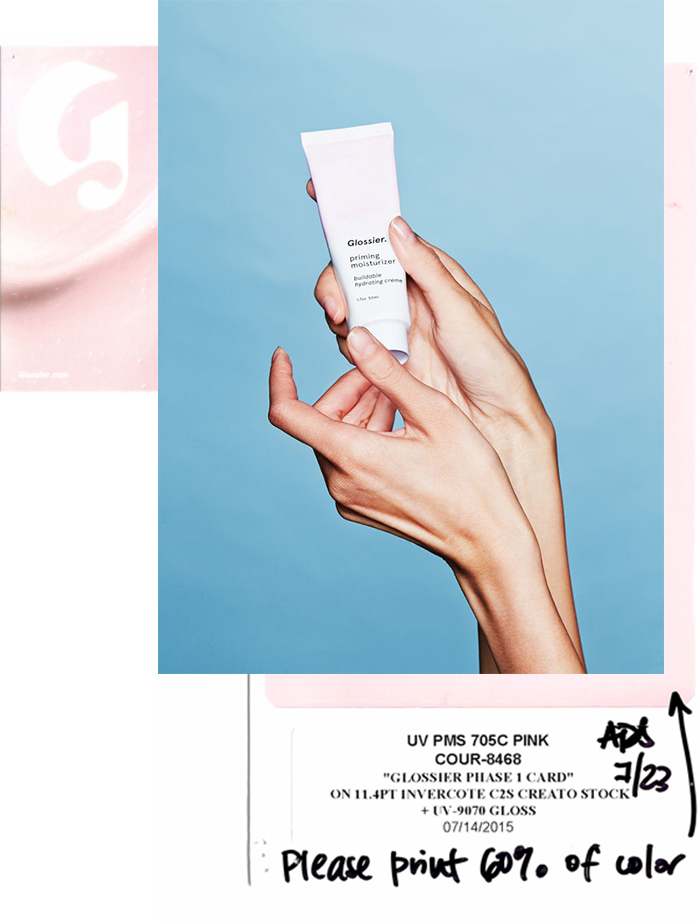
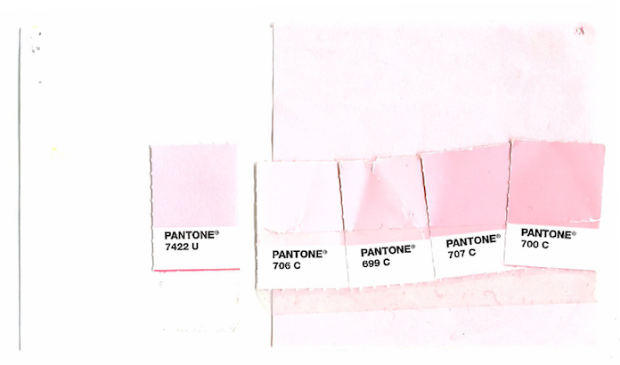
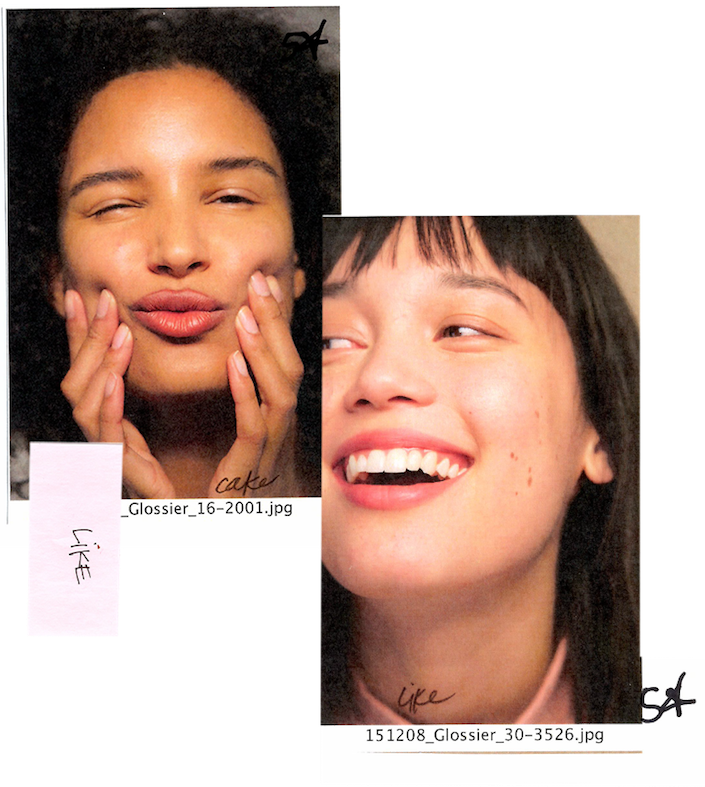
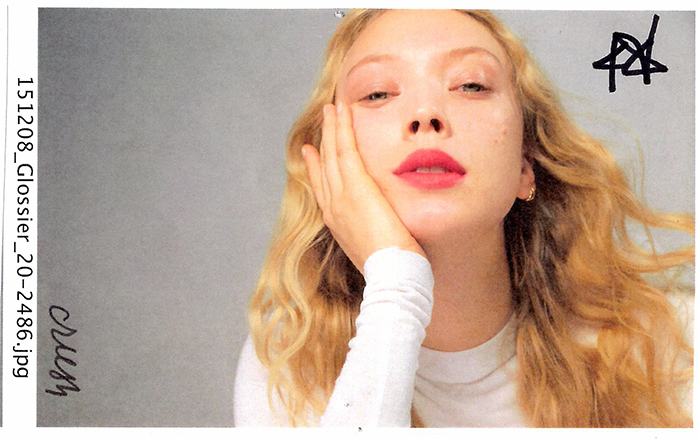

GO BACK

SIGN IN
Hi, What's zupp?
We’re laying the foundation for a beauty movement that celebrates real girls, in real life. Glossier is a new way of thinking about (and shopping for) beauty products. Because “beauty” should be fun, easy, imperfect, and personal. Above all, we believe that you give life to products-products don’t breathe life into you.
_made by swole creators
It all began back in 2010 on IntoTheGloss.com, our super successful beauty blog with a loyal, influential readership—and editors with a sixth-sense for what’s relevant (and what works). We try every product under the sun, interview our icons, and peek inside hundreds of fancy medicine cabinets for our Top Shelf series. You could say that Glossier is distilled from years of recommendations from the coolest girls on the planet.
MUSCLE IS IN
_Lifting is essential
Start with the most important thing: perfectly primed skin. Glossier Phase 1 products are the not-so-basic skincare basics every girl needs in her routine. We think of our skincare like makeup, designing our products to work together to immediately bring out your best. Intense moisturization = instant gratification. Glowy, dewy skin is our thing.
 ...and pain is a choice
How much makeup do you own and how much of it do you actually use? Phase 2 is about helping you make the best choices with a lovingly invented, highly edited selection of uncomplicated makeup staples that live with you—not on you.
 